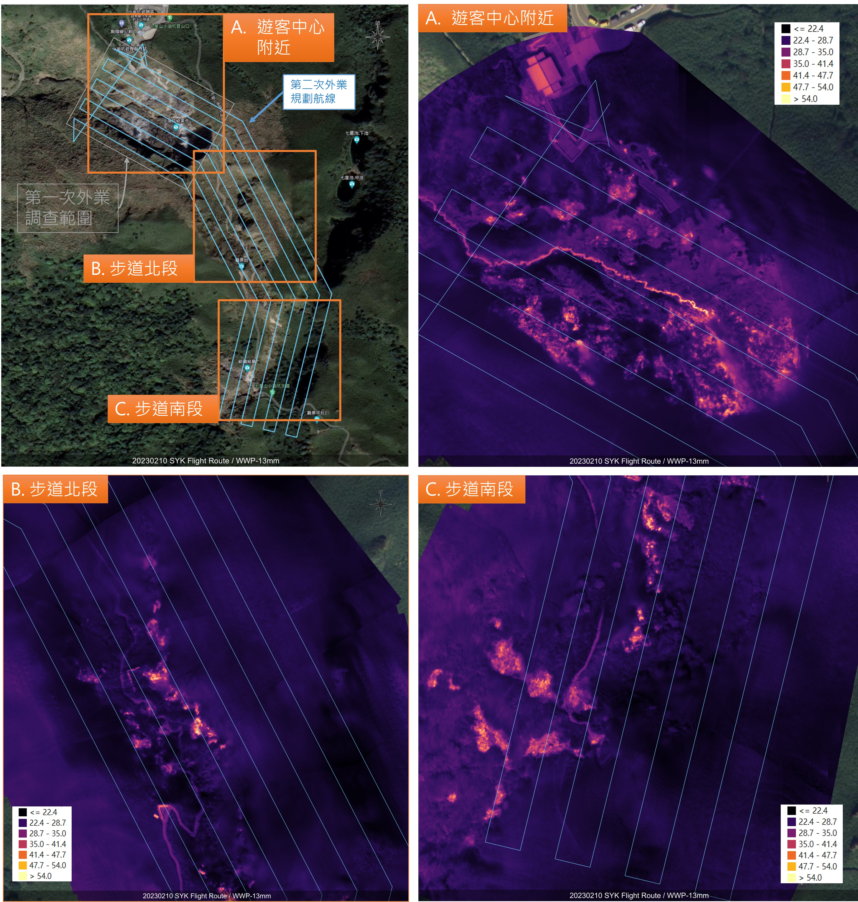

無人機載熱像儀地表溫度拍攝：大油坑及小油坑

圖一、無人機任務控制點測量與航線規劃範例。左圖為地面控制點測量。中圖為溫度控制點測量。右圖為航線規劃範例。
圖二、熱影像現地測量與岩石表面放射率計算。左圖為接觸式溫度計測量地面溫度。中圖為熱像儀拍攝地面溫度。右圖為軟體中進行發射率（Emissivity）計算。
小油坑地區

圖三、小油坑第一次地表溫度調查成果。左圖為地表溫度鑲嵌圖。右圖為座標控制點位置與溫度控制點位置。

圖四、小油坑第二次地表溫度調查成果。左上圖為調查規劃，並分為三個地區：遊客中心、步道北段與步道南段放大檢視。右上圖為遊客中心附近地表溫度鑲嵌影像。右下圖為步道北段附近地表溫度鑲嵌影像。右下圖為步道南段附近地表溫度鑲嵌影像。
大油坑地區

圖五、大油坑第一次地表溫度調查成果。左圖為規劃之無人機任務與拍攝之熱影像位置地圖。中圖為拍攝之部分無人機熱影像縮圖，本次任務共拍攝 1130 張像片。右圖為第一次地表溫度鑲嵌影像成果。
圖六、大油坑第二次地表溫度調查成果。左上圖為規劃之無人機任務。左下圖為單張熱影像分析，箭頭處為大油坑之噴氣孔位置。右圖為地表溫度鑲嵌影像之成果。
發射率測量成果
第二次大油坑地表溫度調查包含發射率之測量，結果如表一所示。
表一、大油坑地區地表發射率測量結果，溫度單位：攝氏度。
| 測量 | 熱電偶測量溫度 | 熱像儀測量溫度 | 發射率 |
|---|---|---|---|
| 1 | 9.7 | 4.2 | 0.89 |
| 2 | 12 | 7.1 | 0.89 |
| 3 | 10.7 | 6.7 | 0.9 |
| 4 | 10.1 | 6.1 | 0.9 |
| 平均發射率：0.895 |